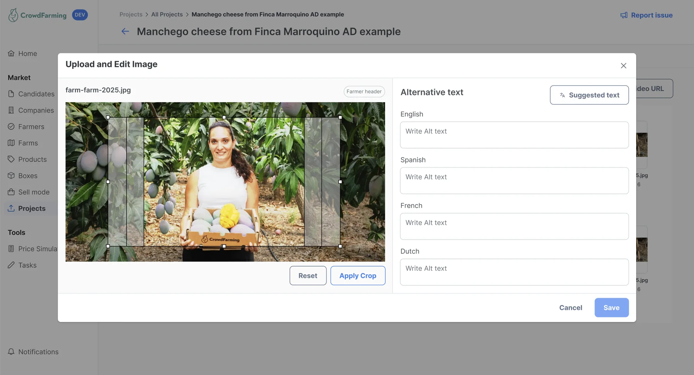
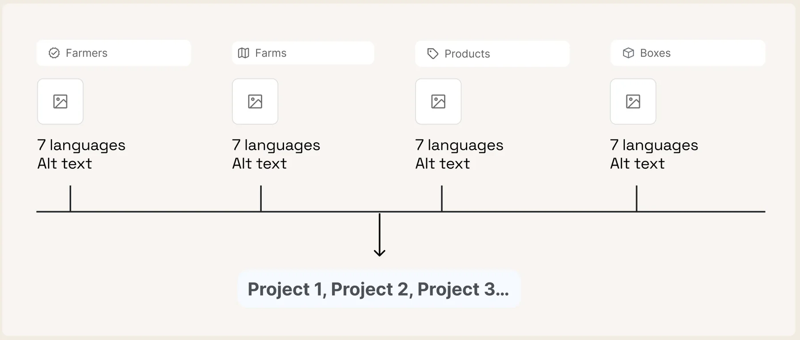
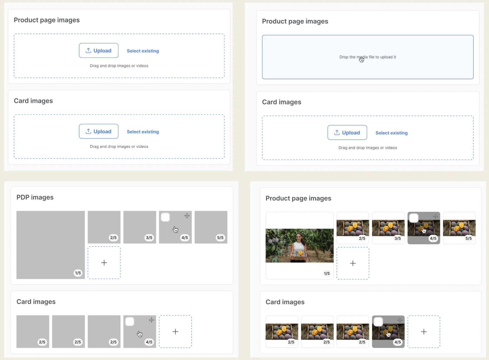
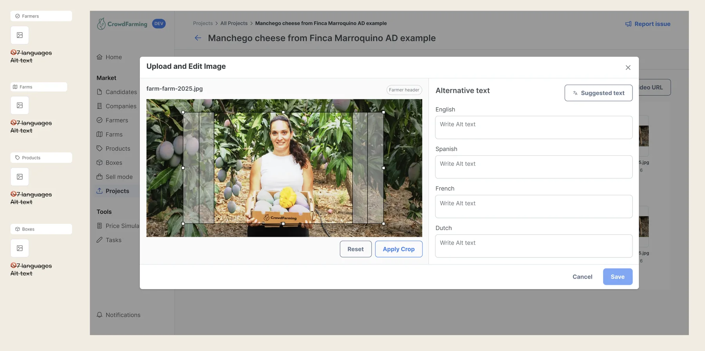
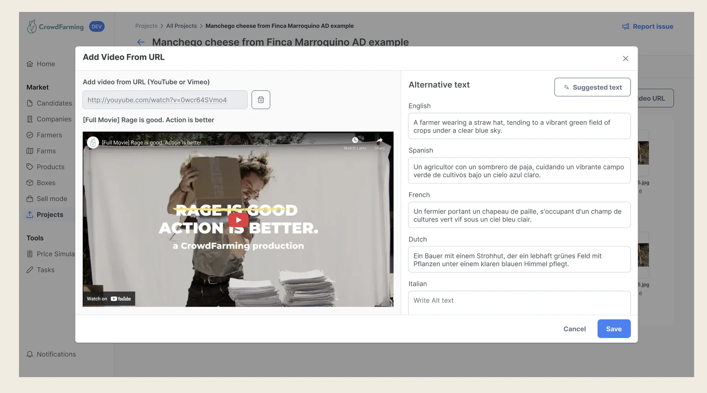

Un hub central para las imágenes de los proyectos
Un único lugar para gestionar las imágenes de cada proyecto en el nuevo back office de CrowdFarming.

Contexto
CrowdFarming es una plataforma que conecta a los consumidores directamente con los agricultores, donde los usuarios pueden «adoptar» un árbol o una unidad de cultivo, pedir cajas sueltas o crear una suscripción.
FRP es el nuevo back office de CrowdFarming, un proyecto que sigue en marcha y que implica mucho trabajo de migración y código legacy.


El reto
El equipo web de CrowdFarming itera constantemente sobre cómo se muestran las imágenes. Por ejemplo, prueban a poner varias fotos dentro de una misma card o a añadir vídeos de YouTube a la página de producto.


Punto de partida
Mi primer paso fue entender a fondo el problema y el escenario existente con el que tenía que trabajar. En FRP, un «Proyecto» es una agregación de otras entidades como Agricultores, Fincas y Productos. Muchas de estas entidades tienen sus propias imágenes, y cada imagen requiere texto alternativo en 7 idiomas distintos, lo que añadía complejidad.


Investigación
Entrevisté a varios usuarios de nuestro equipo de back office para entender mejor sus necesidades e identificar nuevas oportunidades.
Estos fueron los principales insights:
- Poder ver todas las imágenes del proyecto en un solo lugar
- Poder añadir y eliminar imágenes
- Poder reordenar las imágenes
- Poder diferenciar entre imágenes de card e imágenes de la página de producto

Con estos insights en mente, hice un benchmark. Analicé cómo resuelven problemas similares productos con galerías de imágenes complejas, como Shopify, WordPress y Squarespace.
Ideación
Con los insights de la investigación en mente, pasé a la fase de ideación.
Mi primera propuesta fue diseñar una card autónoma que permitiera a los usuarios subir varias imágenes a la vez y reordenarlas fácilmente.

Restricciones y descubrimientos
La solución
Un único lugar para todas las imágenes del proyecto

- Ahora, al crear un proyecto, el sistema encuentra y muestra automáticamente todas las imágenes relacionadas.
- Esto aporta visibilidad inmediata y crea una única fuente de verdad para todos los visuales del proyecto.
La pestaña «Files»: funcionalidades clave

- Introdujimos una pestaña «Files» donde los usuarios pueden subir fotos nuevas y eliminarlas.
- Era importante diferenciar esta biblioteca maestra de las imágenes seleccionadas en la pestaña «Info», que representan la selección final del proyecto.
Editar imágenes de PDP/CARD y su orden

Diseñé un modal de dos paneles para que la edición fuera intuitiva. A la derecha, los usuarios ven su biblioteca completa de imágenes disponibles. A la izquierda, construyen su galería seleccionada añadiendo imágenes de la biblioteca y luego simplemente arrastrando para reordenarlas o eliminarlas.
El flujo de subida y preparación

Enriqueciendo el contenido con vídeo

También añadimos la opción de incrustar vídeos de YouTube y Vimeo, con sus propios textos alternativos multiidioma.